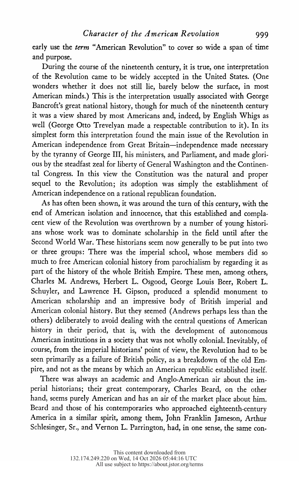
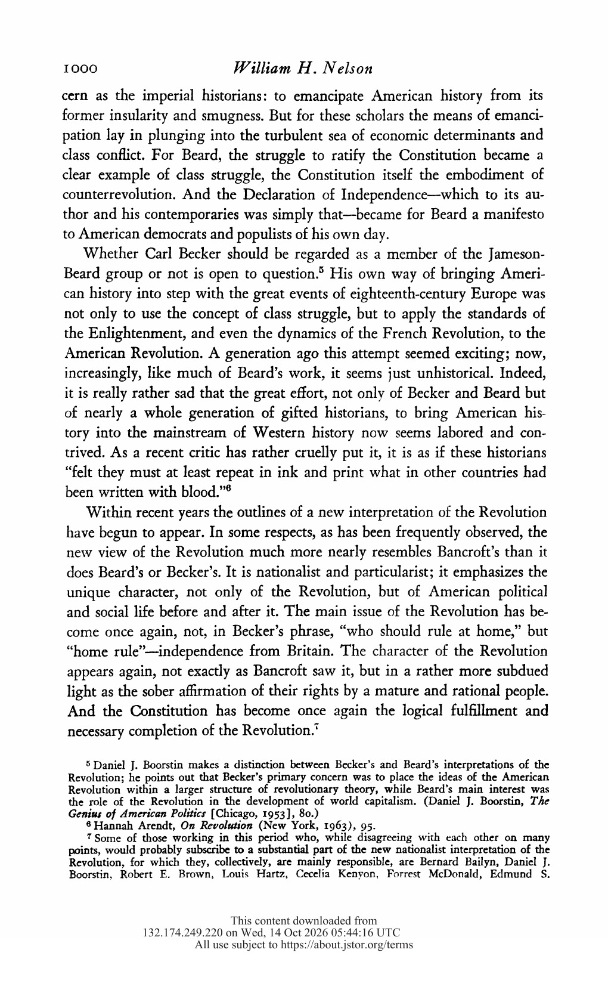

|
Scholarly Article A5.53
The Revolutionary Character of the American Revolution
Article Information
Original article: William H. Nelson, “The Revolutionary Character of the American Revolution,” The American Historical Review 70, no. 4 (1965): 998– 1014. Reader selection: Original journal pages 998–999.
Article Facsimile
 Original journal page 998 · Select the image to open it at full size.  Original journal page 999 · Select the image to open it at full size. Chicago Citations
Bibliography entry:
Nelson, William H. “The Revolutionary Character of the American Revolution.” The American Historical Review 70, no. 4 (1965): 998– 1014. https://doi.org/10.2307/1846900. Footnote citation:
William H. Nelson, “The Revolutionary Character of the American Revolution,” The American Historical Review 70, no. 4 (1965): 998–999, https://doi.org/10.2307/1846900. Shortened citation:
Nelson, “The Revolutionary Character of the American,” 998–999. | ||||||
|